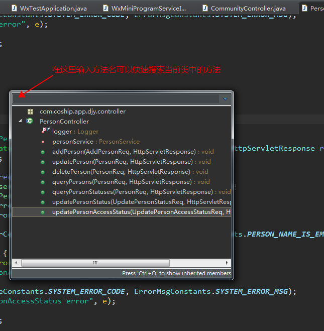
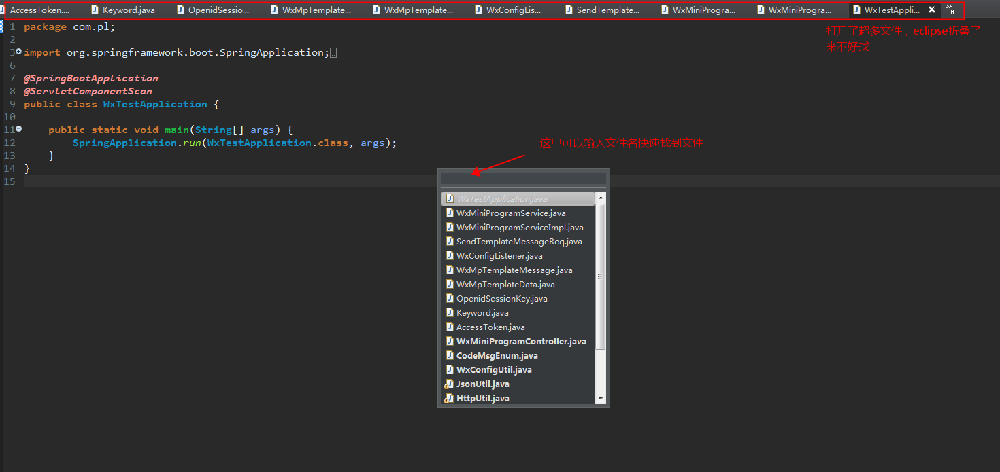

格式化代码：ctrl+shift+f
快速修正：ctrl+1
光标无论在当前行的哪个位置（包括在行中），快速新建一空行在当前行下方，并把光标挪到新建行的开始位置：shift+回车
快速搜索并打开一个类：ctrl+shift+t
快速打开大纲视图：ctrl+o
如果想要查看当前类的方法或者某个特定的方法，会列出当前类的所有方法和属性。这个快捷键常用于快速搜索方法和属性

打开了过多的文件，eclipse折叠起来了，快速找到指定文件：ctrl+e
用于快速显示当前编辑的文件下拉列表，如果当前打开的编辑文件过多，切换不方便的时候可以使用此快捷键
